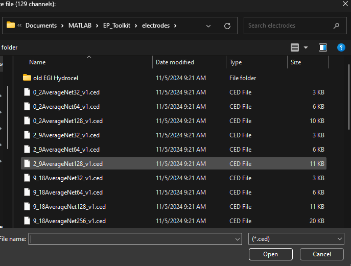
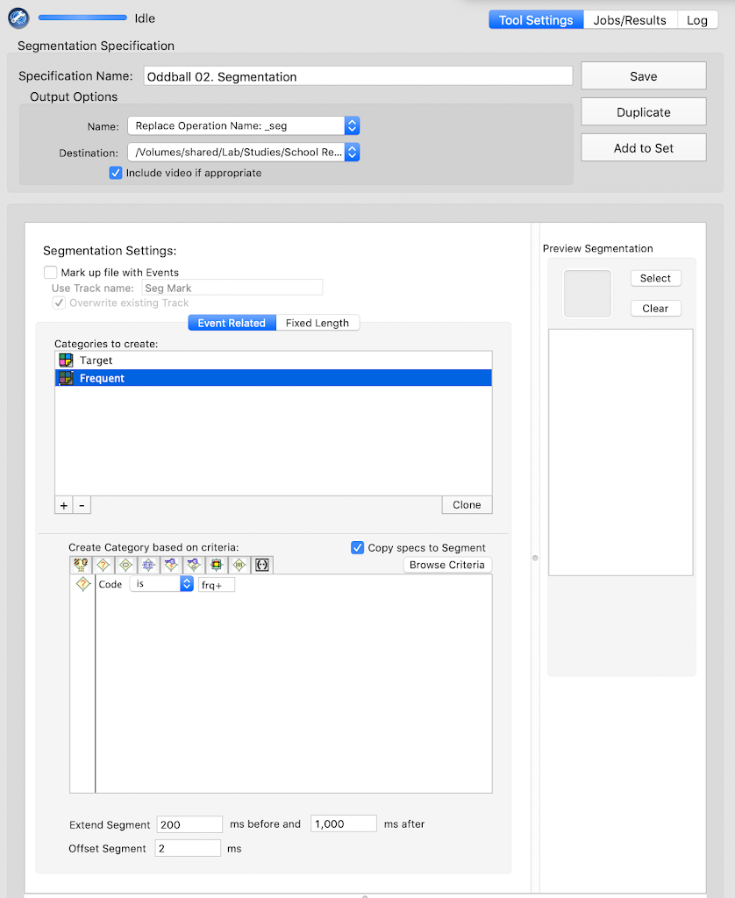
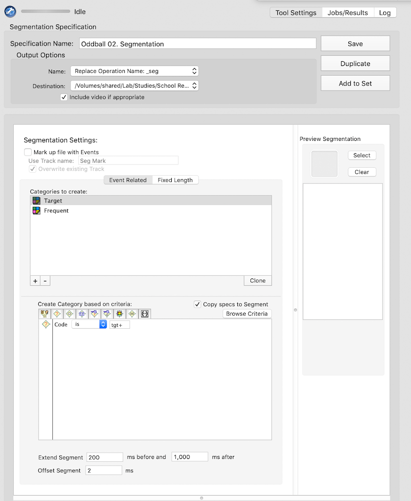

Code
oddballFilePaths <- list.files(
path = "Z:/Shared Server/Study Folder/Data/LV2/ERP/PCA Components/Oddball",
pattern = "*.txt",
recursive = FALSE,
full.names = TRUE)How to Install MatLab and follow the relevant instructionsMatLab folder in your local directory. You will keep all of your MatLab related files in this folder.GitHub accountHAPPE folderHAPPE User Guide documentHAPPE User Guide
Setting up HAPPE section in the user guide and follow the instructions for setting up the HAPPE pipeline, including installation of add-ons and eeglabEP_Toolkit folder to your Matlab folder (in your local directory)EP_toolkit folder:
EP_Toolkit
Documentation
tutorial
tutorial document, navigate to the Set Up section and follow the instructions for installing and setting up EP Toolkit and FieldTrip. Do NOT follow instructions for setting up EEGLAB. You have already set up your path to EEGLAB when you set up the HAPPE pipeline.MatLab folder:
EP_ToolkitFieldtrip-[version number]We have scripts for each task that can prepare files for the HAPPE Pipeline and/or manage the files outputted from HAPPE. These actions can be done manually as well, but the MATLAB scripts make the process more efficient. The scripts will also generate a “log” of all of the files processed through HAPPE to facilitate tracking of EEG data processing. The sections below detail the code used to perform these actions as well as the instructions for using the current scripts.
Note: Before using the scripts/code detailed below, ensure that all filepaths used are in your MATLAB path collection. These may include:
/Data Processing/6. MATLAB EEG Pipeline)To add a file path, click on Home/Set Path/Add Folder in MATLAB. You don’t need to specify the file name, just its containing folder.
1a - Files for HAPPE1b - Manual Processing2 - Processed Files3 - Files for PCA4 - EPT Averages5 - PCA6 - PCA ComponentsThe following section describes the MATLAB scripts used to manage HAPPE output files for the Oddball task data. If you are running HAPPE manually (i.e., without integrating these scripts), skip to the Oddball HAPPE inputs section.
eegProccessingOddball.m file (accessible via Git here) in MATLAB% Set quality threshold parameters
trialCutoff = 10;passPath is the location you wish to have files that meet or exceed the above-defined thresholds to be savedallPath is the location you wish to have ALL files outputted from HAPPE saved to (regardless of whether threshold is met or not)failPath is the location you wish to have files that do not meet the above-defined thresholds to be copied to
summPath is the location you wish to save the file that lists all files processed through HAPPE in the current batch
manPath is the location you wish to save the file that lists all files that do not meet the above-defined thresholds
% Set paths for file sorting
passPath = 'V:\Processing-Repo\Folder Structure\3 - Files for PCA'; %location for .txt output files
allPath = 'V:\Processing-Repo\Folder Structure\2 - Processed Files'; %location for all processed files to end up
failPath = 'V:\Processing-Repo\Folder Structure\1b - Manual Processing'; %location to copy unsuccessful .mff to for manual process
% Set path for processing summary
summPath = 'Z:\Shared Server\Study Folder\Data Processing\6. MATLAB EEG Pipeline\Processed Data Logs';
% Set path for summary of files to process manually
manPath = 'Z:\Shared Server\Study Folder\Data Processing\6. MATLAB EEG Pipeline\Processing To Do\Cases to Process Manually\Lists of Cases by Batch';% Set path to HAPPE pre-processing script
happeRun = input('Enter the full path to the HAPPE pre-processing file:\n> ','s') ;
% Call and run HAPPE pre-processing script
run(happeRun);After the HAPPE inputs are entered, no more user interaction is required for the script to do its job. The HAPPE pipeline will run, and the remaining MATLAB code in the script file will evaluate the files outputted by HAPPE and move them to the appropriate locations based on this evaluation. See Oddball Post-HAPPE Steps for a detailed explanation of the code used to accomplish this.
Documents/GitHub/HAPPE/1. pre-process/HAPPE_v4.m)raw
N if this is your first time running data through the pipeline.Y if you have decided on a set of parameters. Enter the path to the folder containing the input parameters.N
task
Y
tgt+
frq+
doneN
5
2
128
N
all
60
N
notch
59
61
N
30
.1
fir
Y
after wavelet thresholdingN
defaulthard
N
Y
-200
1000
2
Y
-200
0
Y
Y
amplitude
-150
150
all
Y
N
average
1
N
default
This section details the actions performed by the MATLAB scripts once HAPPE is completed. These actions will take place automatically upon completion of the HAPPE pipeline. No user inputs or actions are necessary at this stage.
Exclude files that don’t have any output data from the dataset (containing filename and quality reports from HAPPE pipeline) that will be used to assess file quality
% Create a list of files that received some kind of error message
noTags = any(strcmp(dataQC, 'NO_TAGS'), 2);
oneRej = any(strcmp(dataQC, 'REJ_ONE_SEG'), 2);
allRej = any(strcmp(dataQC, 'ALL_SEG_REJ'), 2);
error = any(strcmp(dataQC, 'ERROR'), 2);
loadFail = any(strcmp(dataQC, 'LOAD_FAIL'), 2);
% Combine filenames with quality data (for some reason, they are not automatically connected by HAPPE)
dataQCNew = [FileNames', dataQC];
% Remove all files in the above lists (those receiving errors) from the quality data
dataQCNew(noTags | allRej | error | loadFail | oneRej, :) = [];
% Create list of variable names for quality data
dataQCnamesNew = ["File", dataQCnames];
% Save the data as a table for ease of use in subsequent steps
qcTable = cell2table(dataQCNew, 'VariableNames', dataQCnamesNew);Identify the files that meet (or don’t meet) the threshold
% Create a list of files (i.e., rows in the table) that meet threshold
thresholdTest = qcTable.("Number_tgt+_Segs_Post-Seg_Rej") >= trialCutoff & qcTable.("Number_frq+_Segs_Post-Seg_Rej") >= trialCutoff;
% Add a variable to the quality data table that include whether or not the file meet threshold
qcTable.Test = thresholdTest;Add an identifying variable to be used for data joining down the line
% Generate IDs based on File variable
idWaveQC = extractBefore(qcTable.File, 8);
% Append ID variable to quality data
qcTable.idWave = idWaveQC;Create a subsetted dataset conataining only the idWave, file name, and “test results” (i.e., whether a given file meets the specified cutoff threshold for inclusion) variables
% Subset to ID and threshold information
testInfo = qcTable(:, ["idWave", "File", "Test"]);
fprintf('Assessment Complete \n');Generate a list of files outputted by HAPPE
% Generate path for HAPPE pre-processing output (using the HAPPE environment variable from user's input of location of raw data for processing)
inputPath = strcat(srcDir, "\5 - processed");
% Read in list of files outputted from HAPPE
preprocessingOutput = dir(inputPath);
% Remove "empty" rows
preprocessingOutput = preprocessingOutput(~ismember({preprocessingOutput.name}, {'.', '..'}));
% Save data as a table for ease of later use
preprocessingOutput = struct2table(preprocessingOutput);
% Subset to file info
fileInfo = preprocessingOutput(:, ["name", "folder"]);Select only desired files to be moved/copied
% Subset to desired files (AveOverTrial)
fileSubset = fileInfo(contains(fileInfo.name, "AveOverTrials"), :);Add condition, ID, and threshold-related variables to the file data
Condition variable (i.e., “Target” or “Frequent”) should match the name of the condition-specific folders you wish the files to save to within the processing repo.% Generate list of IDs based on file name variable
idWaveFS = extractBefore(fileSubset.name, 8);
% Add ID list to file data
fileSubset.idWave = idWaveFS;
% Generate list of files belonging to each condition based on file name variable
target = contains(fileSubset.name, "tgt+");
frequent = contains(fileSubset.name, "frq+");
% Create empty variable for condition
fileSubset.cond = cell(size(fileSubset, 1), 1);
% Fill in condition variable based on the lists generated above
fileSubset.cond(target) = {'Target'};
fileSubset.cond(frequent) = {'Frequent'};
fileSubset.cond(~target & ~frequent) = {'All'};
% Join threshold test information
fileTest = join(fileSubset, testInfo);Prepare data table with information about files that met the threshold
% Create a separate table for only files that meet threshold
movingInfo = fileTest(fileTest.Test, :);
% Create empty columns for filepath variables
movingInfo.destination = cell(size(movingInfo, 1), 1);
movingInfo.origin = cell(size(movingInfo, 1), 1);
movingInfo.processedTo = cell(size(movingInfo, 1), 1);
movingInfo.processedFrom = cell(size(movingInfo, 1), 1);
% Generate file paths based on condition
movingInfo.destination = strcat({passPath}, "\", movingInfo.cond, "\", movingInfo.name);
movingInfo.origin = strcat(movingInfo.folder, "\", movingInfo.name);
movingInfo.processedTo = strcat({allPath}, "\", movingInfo.name);
movingInfo.processedFrom = strcat(movingInfo.folder, "\", movingInfo.name);Prepare data table with information about files that do NOT meet the threshold
% Create a separate table for only files that did not meet threshold
failFiles = fileTest(~fileTest.Test, ["File", "folder", "name"]);
% Create empty columns for filepath variables
failFiles.destination = cell(size(failFiles, 1), 1);
failFiles.origin = cell(size(failFiles, 1), 1);
failFiles.processedTo = cell(size(failFiles, 1), 1);
failFiles.processedFrom = cell(size(failFiles, 1), 1);
% Generate filepaths based on ID and task
failFiles.destination = strcat({failPath}, "\", failFiles.File);
failFiles.origin = strcat({srcDir}, "\", failFiles.File);
failFiles.processedFrom = strcat(failFiles.folder, "\", failFiles.name);
failFiles.processedTo = strcat({allPath}, "\", failFiles.name);
Generate environment variables that correspond to the column index of relevant variables for file sorting
% Define column locations for each filepath variable
% For files that meet threshold:
toCol = find(strcmp(movingInfo.Properties.VariableNames, "destination"));
fromCol = find(strcmp(movingInfo.Properties.VariableNames, "origin"));
procColto = find(strcmp(movingInfo.Properties.VariableNames, "processedTo"));
procColfrom = find(strcmp(movingInfo.Properties.VariableNames, "processedFrom"));
% For files that do not meet threshold
rawCol = find(strcmp(failFiles.Properties.VariableNames, "origin"));
manCol = find(strcmp(failFiles.Properties.VariableNames, "destination"));
failProcColto = find(strcmp(failFiles.Properties.VariableNames, "processedTo"));
failProcColFrom = find(strcmp(failFiles.Properties.VariableNames, "processedFrom"));
% Define variable to exclude
extraVar = 'Time';Use a loop to process all files that met threshold
for row = 1:height(movingInfo)
% Specify path info
pathFrom = movingInfo{row, fromCol};
pathTo = movingInfo{row, toCol};
% Read in the data
rawTable = readtable(pathFrom);
% Remove extra column (Time)
cleanTable = rawTable{:, ~strcmp(rawTable.Properties.VariableNames, extraVar)};
% Save without headers
writematrix(cleanTable, pathTo, 'Delimiter', '\t')
end
Use a loop to copy raw (.mff) files into a location that stores files requiring manual processing
for row = 1:height(failFiles)
% Specify path info
pathFrom = failFiles{row, rawCol};
pathTo = failFiles{row, manCol};
% Copy file
copyfile(pathFrom, pathTo)
endUse a set of loops to copy all HAPPE output files into a folder intended to house all output (whether threshold is met or not)
for row = 1:height(movingInfo)
% Specify path info
pathFrom = movingInfo{row, procColfrom};
pathTo = movingInfo{row, procColto};
% Copy file
copyfile(pathFrom, pathTo);
end
for row = 1:height(failFiles)
% Specify path info
pathFrom = failFiles{row, failProcColFrom};
pathTo = failFiles{row, failProcColto};
% Copy file
copyfile(pathFrom, pathTo);
endGenerate a .txt file listing all processed .mff files
1111_22_oddball.mff) and save the list to the specified location (summPath)FileNames) that the HAPPE pipeline creates that lists all files inputted to the pipeline% Create a table from HAPPE FileNames cell array
processedList = cell2table(FileNames(:));
% Rename file variable from default
processedList = renamevars(processedList, {'Var1'}, {'File'});
% Save current date as a string variable
today = string(date());
% Save time as a string variable, replacing ":" with "_" so that file can be written
time = strrep(datestr(now, 'HH:MM:SS:FFF'), ':', "_");
% Generate file name to include current date and time
listFile = strcat("\oddballProcessed_", today, "_", time);
% Generate full path including file name
summPathFull = strcat(summPath, listFile);
% Write table to specified location
writetable(processedList, summPathFull);Generate a .txt file listing all of the files that did not meet threshold to go through subsequent processing
1111_22_oddball.mff) that did not meet threshold and save the list to the specified location (manPath)FileNames that HAPPE creates; any files listed in FileNames but not in the dataset of files that pass threshold make up the manualList
% Compare movingInfo with FileNames to isolate files that don't meet threshold
manualList = cell2table(FileNames(~ismember(FileNames', movingInfo.File)));
manualList = renamevars(manualList, {'Var1'}, {'File'});
% Generate file name to include current date
manFile = strcat("\oddballManual_", today, "_", time);
% Generate full path including filename
manPathFull = strcat(manPath, manFile);
% Write table to specified location
writetable(manualList, manPathFull);0 - Raw1a - Files for HAPPE1b - Manual Processing2 - Processed Files3 - Files for PCA4 - EPT Averages5 - PCA6 - PCA ComponentsThe following section describes the MATLAB scripts used to manage HAPPE input and output files for the FishShark task data. If you are running HAPPE manually (i.e., without integrating these scripts), skip to the FishShark HAPPE inputs section.
The first two steps described in this section are the same as those described for Oddball processing. Processing actions specific to FishSharks task begin in Step 3.
eegProccessingFishshark.m file (accessible via Git here) in MATLAB% Set quality threshold parameters
trialCutoff = 10;passPath is the location you wish to have files that meet or exceed the above-defined thresholds to be savedallPath is the location you wish to have ALL files outputted from HAPPE saved to (regardless of whether threshold is met or not)failPath is the location you wish to have files that do not meet the above-defined thresholds to be copied to
summPath is the location you wish to save the file that lists all files processed through HAPPE in the current batch
manPath is the location you wish to save the file that lists all files that do not meet the above-defined thresholds
% Set paths for file sorting
passPath = 'V:\Processing-Repo\Folder Structure\3 - Files for PCA'; %location for .txt output files
allPath = 'V:\Processing-Repo\Folder Structure\2 - Processed Files'; %location for all processed files to end up
failPath = 'V:\Processing-Repo\Folder Structure\1b - Manual Processing'; %location to copy unsuccessful .mff to for manual process
% Set path for processing summary
summPath = 'Z:\Shared Server\Study Folder\Data Processing\6. MATLAB EEG Pipeline\Processed Data Logs';
% Set path for summary of files to process manually
manPath = 'Z:\Shared Server\Study Folder\Data Processing\6. MATLAB EEG Pipeline\Processing To Do\Cases to Process Manually\Lists of Cases by Batch';eeglab into the console. You can close it as soon as it opens, but this step ensures that eeglab is loaded into your current session and helps prevent the subsequent code from erroring out.Set the filepaths for raw and updated .mff files
% User input for location of raw files
pathRaw = input('Enter the full path to the folder containing the raw files:\n> ','s');
% User input for destination of subsetted files
pathSub = input('Enter the full path to the folder in which to save the updated files:\n> ','s');At this point, there will be no user input/actions necessary until all of the .mff files in the pathRaw directory have been updated and saved into the pathSub directory. The code that asks the user for the path to HAPPE will run when that process has finished. The following section will describe the code used to automate the process of updating .mff event tags to include accuracy information at the trial level. Move on to Step 4 (Run the HAPPE Pipeline) when the process has completed.
Gather and manage information from the directory housing the raw (.mff) files
% Have MATLAB gather a list of raw files housed in specified location (pathRaw)
dirInfo = struct2table(dir(pathRaw));
% Remove blank rows
noName = strcmp(dirInfo.name, '.') | strcmp(dirInfo.name, '..');
dirInfo(noName, :) = [];Generate variables necessary for managing raw and updated files
% Generate ID variable
dataFiles = dirInfo(:, "name");
% Add ID variable to file data
dataFiles.ID = extractBefore(dataFiles.name, 8);
% Generate path to read raw data
rawPaths = dataFiles;
rawPaths.path = strcat({pathRaw}, "/", dirInfo.name);
rawPaths = rawPaths(:, ["ID", "path"]);
% Generate path to save updated versions of the data (containing accuracy info at trial level)
subPaths = dataFiles;
subPaths.path = strcat({pathSub}, "/", subPaths.ID, "_sub_fishshark.mff");
subPaths = subPaths(:, ["ID", "path"]);
% Join filepath datatables
mergePaths = join(rawPaths, subPaths, 'Keys', {'ID'})Use a loop to update the event tags in each .mff file to reflect accuracy of response
mergePaths dataset, MATLAB will perform the following actions:
Go++ will become cGo++)pathSub)latency column or the urevent column (as shown below)for row = 1:height(mergePaths)
% Specify paths
rawFolder = mergePaths{row, "path_rawPaths"}
subFolder = mergePaths{row, "path_subPaths"}
% Read in EEG data
EEGraw = pop_mffimport(char(rawFolder), 'code')
% Create table from "event" field of raw data
EEGevent = struct2table(EEGraw.event)
% Check for the existence of usable rows
checkVars = strcmp(EEGevent.Properties.VariableNames, 'mffkey_cel')
% Skip files without necessary variables
if max(checkVars) == 0
continue
end
% Create table without practice/training trials
keepRows = strcmp(EEGevent.mffkey_cel, '4')
EEGsub = EEGevent(keepRows, :)
% Check for the existence of usable rows
checkRows = max(keepRows)
% Skip files with no usable rows
if checkRows == 0
continue
end
% Get response info at trial level
EEGresp = table(EEGsub.mffkey_obs, EEGsub.mffkey_eval, EEGsub.mffkey_rtim)
EEGresp = rmmissing(EEGresp)
EEGresp = renamevars(EEGresp, ["Var1", "Var2", "Var3"], ["Trial", "Eval", "RTime"])
% Get condition info at trial level
EEGconds = table(EEGsub.mffkey_obs, EEGsub.type)
EEGconds = renamevars(EEGconds, ["Var1", "Var2"], ["Trial", "Cond"])
keepConds = strcmp(EEGconds.Cond, 'Go++') | strcmp(EEGconds.Cond, 'NG++')
EEGcond = EEGconds(keepConds, :)
% Merge datasets
EEGtrials = join(EEGcond, EEGresp)
EEGtrials.RTime = cellfun(@str2num, EEGtrials.RTime)
% Evaluate trials for correct-ness of response
correct = strcmp(EEGtrials.Cond, 'Go++') & strcmp(EEGtrials.Eval, '1') & EEGtrials.RTime > 200 | strcmp(EEGtrials.Cond, 'NG++') & strcmp(EEGtrials.Eval, '0')
EEGtrials.Acc = correct
% Create new code tags including accuracy information
EEGtrials.newCode(EEGtrials.Acc & strcmp(EEGtrials.Cond, 'Go++')) = {'cGo++'}
EEGtrials.newCode(~EEGtrials.Acc & strcmp(EEGtrials.Cond, 'Go++')) = {'xGo++'}
EEGtrials.newCode(EEGtrials.Acc & strcmp(EEGtrials.Cond, 'NG++')) = {'cNG++'}
EEGtrials.newCode(~EEGtrials.Acc & strcmp(EEGtrials.Cond, 'NG++')) = {'xNG++'}
% Subset information for merge
EEGmerge = EEGtrials(:, {'Trial', 'Cond', 'newCode'})
% Prep key in original data
EEGevent.key = strcat(EEGevent.mffkey_obs, EEGevent.type)
% Prep key in merge data
EEGmerge.key = strcat(EEGmerge.Trial, EEGmerge.Cond)
EEGmerge = EEGmerge(:, {'key', 'newCode'})
% Merge new codes with event table
EEGnew = outerjoin(EEGevent, EEGmerge)
% Replace codes where new code is needed
EEGnew.code(~strcmp(EEGnew.newCode, '')) = EEGnew.newCode(~strcmp(EEGnew.newCode, ''))
EEGnew.type(~strcmp(EEGnew.newCode, '')) = EEGnew.newCode(~strcmp(EEGnew.newCode, ''))
% Arrange table in order of event (CRUCIAL for correct export)
EEGnew = sortrows(EEGnew, 'urevent')
% Convert table back to struct and restore original dimensions
EEGnew = table2struct(EEGnew(:, 1:29))
EEGnew = reshape(EEGnew, [1, height(EEGnew)])
% Replace event table(s) in original struct
EEGraw.event = EEGnew
EEGraw.urevent = table2struct(struct2table(EEGnew(:, 1:28)))
% Export updated file
pop_mffexport(EEGraw, char(subFolder))
end % Set path to HAPPE pre-processing script
happeRun = input('Enter the full path to the HAPPE pre-processing file:\n> ','s') ;
% Call and run HAPPE pre-processing script
run(happeRun);After the HAPPE inputs are entered, no more user interaction is required for the script to do its job. The HAPPE pipeline will run, and the remaining MATLAB code in the script file will evaluate the files outputted by HAPPE and move them to the appropriate locations based on this evaluation. See FishShark Post-HAPPE Steps for a detailed explanation of the code used to accomplish this.
Documents/GitHub/HAPPE/1. pre-process/HAPPE_v4.m)raw
N if this is your first time running data through the pipeline.Y if you have decided on a set of parameters. Enter the path to the folder containing the input parameters.N
task
Y
cGo++
xGo++
cNG++
xNG++
doneN
5
2
128
N
all
60
N
notch
59
61
N
30
.1
fir
Y
after wavelet thresholdingN
defaulthard
N
Y
-200
1000
17
Y
-200
0
Y
Y
amplitude
-150
150
all
Y
N
average
1
N
default
This section details the actions performed by the MATLAB scripts once HAPPE is completed. These actions will take place automatically upon completion of the HAPPE pipeline. No user inputs or actions are necessary at this stage.
Exclude files that don’t have any output data from the dataset (containing filename and quality reports from HAPPE pipeline) that will be used to assess file quality
% Create a list of files that received some kind of error message
noTags = any(strcmp(dataQC, 'NO_TAGS'), 2);
allRej = any(strcmp(dataQC, 'ALL_SEG_REJ'), 2);
oneRej = any(strcmp(dataQC, 'REJ_ONE_SEG'), 2);
error = any(strcmp(dataQC, 'ERROR'), 2);
loadFail = any(strcmp(dataQC, 'LOAD_FAIL'), 2);
% Combine filenames with quality data (for some reason, they are not automatically connected by HAPPE)
dataQCNew = [FileNames', dataQC];
% Remove all files in the above lists (those receiving errors) from the quality data
dataQCNew(noTags | allRej | error | loadFail | oneRej, :) = [];
% Create list of variable names for quality data
dataQCnamesNew = ["File", dataQCnames];
% Save the data as a table for ease of use in subsequent steps
qcTable = cell2table(dataQCNew, 'VariableNames', dataQCnamesNew);
% Subset to ID and threshold information
testInfo = qcTable(:, ["idWave", "File", "Test"]);Identify the files that meet (or don’t meet) the threshold
% Create a list of files (i.e., rows in the table) that meet threshold
thresholdTest = qcTable.("Number_cNG++_Segs_Post-Seg_Rej") >= trialCutoff & qcTable.("Number_cGo++_Segs_Post-Seg_Rej") >= trialCutoff;
% Add a variable to the quality data table that include whether or not the file meet threshold
qcTable.Test = thresholdTest;Add an identifying variable to be used for data joining down the line
% Generate IDs based on File variable
idWaveQC = extractBefore(qcTable.File, 8);
% Append ID variable to quality data
qcTable.idWave = idWaveQC;Create a subsetted dataset conataining only the idWave, file name, and “test” results (i.e., whether a given file meets the specified cutoff threshold for inclusion)
% Subset to ID and threshold information
testInfo = qcTable(:, ["idWave", "File", "Test"]);
fprintf('Assessment Complete \n');Generate a list of files outputted by HAPPE
% Generate path for HAPPE pre-processing output (using the HAPPE environment variable from user's input of location of raw data for processing)
inputPath = strcat(srcDir, "\5 - processed");
% Read in list of files outputted from HAPPE
preprocessingOutput = dir(inputPath);
% Remove "empty" rows
preprocessingOutput = preprocessingOutput(~ismember({preprocessingOutput.name}, {'.', '..'}));
% Save data as a table for ease of later use
preprocessingOutput = struct2table(preprocessingOutput);
% Subset to file info
fileInfo = preprocessingOutput(:, ["name", "folder"]);Select only desired files to be moved/copied
% Subset to desired files (AveOverTrial)
fileSubset = fileInfo(contains(fileInfo.name, "AveOverTrials"), :);Add condition, ID, and threshold-related variables to the file data
Condition variable (i.e., “cGo” or “cNoGo”) should match the name of the condition-specific folders you wish the files to save to within the processing repo.% Generate list of IDs based on file name variable
idWaveFS = extractBefore(fileSubset.name, 8);
% Add ID list to file data
fileSubset.idWave = idWaveFS;
% Generate list of files belonging to each condition based on file name variable
cGo = contains(fileSubset.name, "cGo++");
cNoGo = contains(fileSubset.name, "cNG++");
xGo = contains(fileSubset.name, "xGo++");
xNoGo = contains(fileSubset.name, "xNG++");
% Create empty variable for condition
fileSubset.cond = cell(size(fileSubset, 1), 1);
% Fill in condition variable based on the lists generated above
fileSubset.cond(cGo) = {'cGo'};
fileSubset.cond(cNoGo) = {'cNoGo'};
fileSubset.cond(xGo) = {'xGo'};
fileSubset.cond(xNoGo) = {'xNoGo'};
fileSubset.cond(~cGo & ~cNoGo & ~xGo & ~xNoGo) = {'All'};
% Join threshold test information
fileTest = join(fileSubset, testInfo);Prepare data table with information about files that met the threshold
% Create a separate table for only files that meet threshold
movingInfo = fileTest(fileTest.Test, :);
% Create empty columns for filepath variables
movingInfo.destination = cell(size(movingInfo, 1), 1);
movingInfo.origin = cell(size(movingInfo, 1), 1);
movingInfo.processedTo = cell(size(movingInfo, 1), 1);
movingInfo.processedFrom = cell(size(movingInfo, 1), 1);
% Generate file paths based on condition
movingInfo.destination = strcat({passPath}, "\", movingInfo.cond, "\", movingInfo.name);
movingInfo.origin = strcat(movingInfo.folder, "\", movingInfo.name);
movingInfo.processedTo = strcat({allPath}, "\", movingInfo.name);
movingInfo.processedFrom = strcat(movingInfo.folder, "\", movingInfo.name);Prepare data table with information about files that do NOT meet the threshold
% Create a separate table for only files that did not meet threshold
failFiles = fileTest(~fileTest.Test, ["File", "folder", "name"]);
% Create empty columns for filepath variables
failFiles.destination = cell(size(failFiles, 1), 1);
failFiles.origin = cell(size(failFiles, 1), 1);
failFiles.processedTo = cell(size(failFiles, 1), 1);
failFiles.processedFrom = cell(size(failFiles, 1), 1);
% Generate filepaths based on ID and task
failFiles.destination = strcat({failPath}, "\", failFiles.File);
failFiles.origin = strcat({srcDir}, "\", failFiles.File);
failFiles.processedFrom = strcat(failFiles.folder, "\", failFiles.name);
failFiles.processedTo = strcat({allPath}, "\", failFiles.name);
Generate environment variables that correspond to the column index of relevant variables for file sorting
% Define column locations for each filepath variable
% For files that meet threshold:
toCol = find(strcmp(movingInfo.Properties.VariableNames, "destination"));
fromCol = find(strcmp(movingInfo.Properties.VariableNames, "origin"));
procColto = find(strcmp(movingInfo.Properties.VariableNames, "processedTo"));
procColfrom = find(strcmp(movingInfo.Properties.VariableNames, "processedFrom"));
% For files that do not meet threshold
rawCol = find(strcmp(failFiles.Properties.VariableNames, "origin"));
manCol = find(strcmp(failFiles.Properties.VariableNames, "destination"));
failProcColto = find(strcmp(failFiles.Properties.VariableNames, "processedTo"));
failProcColFrom = find(strcmp(failFiles.Properties.VariableNames, "processedFrom"));
% Define variable to exclude
extraVar = 'Time';Use a loop to process all files that met threshold
for row = 1:height(movingInfo)
% Specify path info
pathFrom = movingInfo{row, fromCol};
pathTo = movingInfo{row, toCol};
% Read in the data
rawTable = readtable(pathFrom);
% Remove extra column (Time)
cleanTable = rawTable{:, ~strcmp(rawTable.Properties.VariableNames, extraVar)};
% Save without headers
writematrix(cleanTable, pathTo, 'Delimiter', '\t')
end
Use a loop to copy raw (.mff) files into a location that stores files requiring manual processing
for row = 1:height(failFiles)
% Specify path info
pathFrom = failFiles{row, rawCol};
pathTo = failFiles{row, manCol};
% Copy file
copyfile(pathFrom, pathTo)
endUse a set of loops to copy all HAPPE output files into a folder intended to house all output (whether threshold is met or not)
for row = 1:height(movingInfo)
% Specify path info
pathFrom = movingInfo{row, procColfrom};
pathTo = movingInfo{row, procColto};
% Copy file
copyfile(pathFrom, pathTo);
end
for row = 1:height(failFiles)
% Specify path info
pathFrom = failFiles{row, failProcColFrom};
pathTo = failFiles{row, failProcColto};
% Copy file
copyfile(pathFrom, pathTo);
endGenerate a .txt file listing all processed .mff files
1111_22_fishshark.mff) and save the list to the specified location (summPath)% Create a table from HAPPE FileNames cell array
processedList = cell2table(FileNames(:));
% Rename file variable from default
processedList = renamevars(processedList, {'Var1'}, {'File'});
% Save current date as a string variable
today = string(date());
% Save time as a string variable, replacing ":" with "_" so that file can be written
time = strrep(datestr(now, 'HH:MM:SS:FFF'), ':', "_");
% Generate file name to include current date and time
listFile = strcat("\oddballProcessed_", today, "_", time);
% Generate full path including file name
summPathFull = strcat(summPath, listFile);
% Write table to specified location
writetable(processedList, summPathFull);Generate a .txt file listing all of the files that did not meet threshold to go through subsequent processing
1111_22_fishshark.mff) that did not meet threshold and save the list to the specified location (manPath)FileNames that HAPPE creates; any files listed in FileNames but not in the dataset of files that pass threshold make up the manualList
% Compare movingInfo with FileNames to isolate files that don't meet threshold
manualList = cell2table(FileNames(~ismember(FileNames', movingInfo.File)));
manualList = renamevars(manualList, {'Var1'}, {'File'});
% Generate file name to include current date
manFile = strcat("\fishSharkManual_", today, "_", time);
% Generate full path including filename
manPathFull = strcat(manPath, manFile);
% Write table to specified location
writetable(manualList, manPathFull);ep in command promptRead to import filestext (.txt)
average
Adult Hydrocel 128-channel 1.0
Single File Mode.
1001_36_oddball_processed_AveOverTrials_tgt+.txt
1004_36_oddball_processed_AveOverTrials_cGo++.txt
Single File Mode menu use the Subject field to denote which characters in the filename name will determine the participant ID.
1:7 would correspond to 1001_36 in a file called 1001_36_oddball_processed_AveOverTrials_tgt+.txt (outputted by HAPPE)Single File Mode menu use the Cell field to denote which characters in the file name will determine the task condition.
41:43 would correspond to frq or tgt in a file called 1001_36_oddball_processed_AveOverTrials_tgt+.txt
47:49 that correspond to cgo or cng.
Read. You will be asked to name the aggregate file created by importing and combining the single files. Use the convention “task_condition_age” to name the file (e.g., ob_tgt_54)3 - Files for PCA\Target) and use Ctrl + A to select all files in that folder. Click Open once all desired files are selected2_9AverageNet128.ced file when prompted by another popup. This file corresponds to the electrode template associated with the participant age range and type of net represented in the data
2_9AverageNet128.ced template is most appropriate 


Main and click Edit
Overview, add the following information:
Oddball, FishShark, or StopSignal
average reference
200
1000
Done
Main and click Save
.ept file in the 4-EPT Averages folder using the following naming convention: “task_condition_age”. For example, if you were working on the target condition of oddball for all age groups, you would save the file as ob_tgt_all
ob_tgt_all) is not already in the working environment, read it in using the steps below
Read
EP (.ept)
Read
4 - EPT Averages folder and select desired file(s)Open in the browser window to read the file(s)Main to return to main menuEdit
Subjects paneAll from among the many options along the lefthand pane of the editor
Add
gave and represents the grand average across all subjectsDone to exit the editor window, then Main to return to the EP Toolkit homeMain and click PCA
temporal
promax
0
tPCA_ob_tgt_all)ob_tgt_all)Main and click Save. Save the tPCA file in the 5-PCA folderMain and click PCA
spatial
infomax
0
sPCA_ob_tgt_all)ob_tgt_all)Main and click Save. Save the sPCA file in the 5-PCA folderMain and click PCA
spatial
infomax
0
tsPCA_ob_tgt_all)tPCA file (created in the previous step)Main and click Save. Save the tsPCA file in the 5-PCA folder.Here, the goal is to select the PCA component that corresponds to the ERP component of interest, and the extraction that supports the intended interpretability of the component.
View to begin the process of selecting the PCA component that corresponds to the ERP of interest.
Window and input the following:
mean, maxPeak, or other options. (According to Joe Dien), when using amplitudes from PCA components, it does not matter which option you select—all the different methods result in comparable p-values when dealing with PCA components. So, select a method that makes sense for the story you want to tell. The methods will yield different results when dealing with the raw waveforms.AutoPCA or Window to select channels. If the peak amplitude is where you expect temporally and spatially, then use the autoPCA function, and if it is not, then window to where you expect it to be. This will allow you to report results that are more interpretable. As Joe Dien described, the way that PCA data are stored internally in the toolkit are as factor scores (i.e., component scores). When you extract amplitudes from a PCA component, you are extracting the factor scores multiplied by a constant (some scaling factor, representing the electrode where you extract it from). Thus, according to Joe Dien, the p-values should be the same regardless of whether you use AutoPCA, or extract from a single electrode or multiple electrodes (it would be good to verify this). What is changing is merely the scaling factor (i.e., the constant that is multiplied by all factor scores). When you select multiple electrodes, it is computing the PCA-estimated amplitude at each electrode and performing a simple average across those electrodes. The AutoPCA extracts the PCA-estimated amplitude at the peak channel and the peak timepoint. If the waveform is negative-going at the peak channel, and you are interested in the positive-going dipole, you would select the peak positive channel to identify the PCA-estimated amplitude of the positive-going waveform on that PCA component. Nevertheless, even though you are selecting the PCA-estimated amplitude for a given channel at a given electrode, there are now “virtual channels”; the estimates include the contributions of all channels and all timepoints to the extent that they load onto the PCA component of interest. Thus, even if you select to window a PCA component from only 1 channel at 1 timepoint, it is using ALL channels and timepoints in the estimation—this is not the case if windowing the raw ERP waveforms.6 - PCA Components folder using the following naming convention: “erp_task_condition_age_component” (e.g.,erp_ob_tgt_all_P3).View and input the following
ob_tgt_all)gave
none
Waves
PCA_ComponentInfo.txt file in the 6-PCA Components folder.
Window
tsPCA_ob_tgt_all)Channels button (about halfway down the Window window)Factor
tsPCA_ob_tgt_all)+, -, or +/-)TF01SF01)Save in the Window window6-PCA Components
If you are only interested in the grand average data and not individual subjects, these instructions will allow you to export a .txt file containing only the grand average data.
Main screen), select Edit
ob_tgt_all) that contains a “subject” representing the grand average
ob_tgt_all could be renamed to ob_tgt_gav
Subjects from the options at the top of the editor windowAll from among the options on the lefthand side of the Subjects window
grand average
Delete on the lefthand side of the editor window
Done
New to generate a new file and preserve the originalMain to return to EP Toolkit “home”Save
Text (.txt)
ob_tgt_gav) to save iterp_ob_tgt_all_P3) in the following location on the Lab Drive: [...]/Data/LV2/PCA Components under the appropriate task (i.e., Oddball, Fishshark, or Stop Signal)erpOddball.R composite script located in [...]Data Processing/3. Composites and available via Git here. Comparable scripts have also been created for FishShark and Stop Signal tasks.
Create a list of all PCA component files in the specified directory. This list will contain the full filepaths to each component file which are used to read the data into R.
oddballFilePaths <- list.files(
path = "Z:/Shared Server/Study Folder/Data/LV2/ERP/PCA Components/Oddball",
pattern = "*.txt",
recursive = FALSE,
full.names = TRUE)Generate a list of the names of each PCA component file in the specified directory. This list will be used to rename columns in the final composite dataset according to the name of the component file. For this reason, the naming convention of each component files is crucial; this will determine how the corresponding column of the composite datafile is named.
oddballFiles <- list.files(
path = "Z:/Shared Server/Study Folder/Data/LV2/ERP/PCA Components/Oddball",
pattern = "*.txt",
recursive = FALSE)Read in each component file, skipping the rows containing summary information about the extracted component (the first 7 rows in this example).
oddballData <- lapply(oddballFilePaths, function(x) read_delim(x, delim = "\t", skip = 7)) “Clean” the list of component file names by removing the file extension (in this case, .txt).
componentNames <- oddballFiles %>% str_remove(".txt")Give ID variable a proper name.
At this stage, the ERP component data are nested within a list of separate data objects. We must therefore merge them into a single dataframe object.
oddballDataMerged <- oddballData %>%
reduce(full_join, by = c("ID"))Organize the combined data. The code below performs the following operations (in order of appearance):
tcid variable by extracting the first four characters of existing ID variablewave variable by extracting the 6th and 7th characters of existing ID variabletcid and wave appear as the first two columns while all other columns retain their order in the datasetID variable now that it has been separated into tcid and wave
Update column names of merged data according to the list of PCA component files.
Save composite data to desired location.
write_csv(oddballDataClean, file = "Z:/Shared Server/Study Folder/Data/REDCap/Composites/erpOddball.csv")Read in the grand average waveform data exported from EP Toolkit.
obTgt <- read.table("V:/SRS-ERP-Oddball/Hard/All/4 - EPT Averages/2024-11-05/gave/ob_tgt_gav.txt")
obFrq <- read.table("V:/SRS-ERP-Oddball/Hard/All/4 - EPT Averages/2024-11-05/gave/ob_frq_gav.txt")Create a subset of data that only includes those electrodes that are part of the clusters identified in EP Toolkit.
# Set electrode clusters
obElectrodes <- c(58, 59, 64, 65, 66, 67, 69, 70, 71, 72, 73, 74, 75, 76, 77, 81, 82, 83, 84, 89, 80, 91, 95, 96, 101)
# Subset to desired electrodes
obTgt_sub <- obTgt[, obElectrodes]
obFrq_sub <- obFrq[, obElectrodes]Compute averages and create labels for conditions
# Compute averages
obTgt_sub$amplitude <- rowMeans(obTgt_sub)
obFrq_sub$amplitude <- rowMeans(obFrq_sub)
# Remove raw values and add condition labels
obTgt_amps <- obTgt_sub %>% select(amplitude) %>% mutate(condition = "Target")
obFrq_amps <- obFrq_sub %>% select(amplitude) %>% mutate(condition = "Frequent")Add timing-related information to the data
# Create template
erpTemplate <- data.frame(
time = -199:1000
)
# Merge template with amplitude data
obTgtTimes <- cbind(erpTemplate, obTgt_amps)
obFrqTimes <- cbind(erpTemplate, obFrq_amps)Combine all conditions into a single data object to be used for plotting
oddball <- rbind(obTgtTimes, obFrqTimes) %>%
select(time, condition, amplitude) %>%
arrange(time)Generate the waveform figures
ggplot(
data = oddball,
aes(
x = time,
y = amplitude,
group = condition,
color = condition
)
) +
geom_line(linewidth = 1.5) +
scale_x_continuous(
name = "Time Relative to Stimulus Onset (ms)",
limits = c(-200, 1000),
breaks = seq(from = -200, to = 1000, by = 200)) +
scale_y_continuous(
name = "Voltage (microvolts)",
limits = c(-4, 10),
breaks = seq(from = -10, to = 15, by = 2)) +
scale_color_viridis_d()+
theme_classic(base_size = 18) +
theme(
legend.position = c(.7, .9),
legend.title = element_blank()).txt files.ept files.set filesMFFMatlabIO plugin
File → Import Data → Using EEGLAB functions and plugins → Import Magstim/EGI .mff file
EEG = pop_mffimport({'\\\\lc-rs-store24.hpc.uiowa.edu\\lss_itpetersen\\Lab\\Studies\\School Readiness Study\\Data\\LV2\\ERP\\Oddball\\0-Raw Data (mff)\\1613_90_oddball.mff'},{'code'},0,0);
[ALLEEG EEG CURRENTSET] = pop_newset(ALLEEG, EEG, 1,'overwrite','on','gui','off');Select .mff file(s)
Event type field (may select multiple): code
Filter → Basic FIR Filter
0.1 – 30 Hz
save as new name
EEG = pop_eegfiltnew(EEG, 'locutoff',0.1,'hicutoff',30,'plotfreqz',1);Tools → Re-reference the data → Compute average reference
EEG = eeg_checkset( EEG );
EEG = pop_reref( EEG, []);
[ALLEEG EEG CURRENTSET] = pop_newset(ALLEEG, EEG, 1,'setname','1613_90_oddball_fil_ref','overwrite','on','gui','off');
eeglab redraw;Tools → Reject data using Clean Rawdata and ASR
EEG = eeg_checkset( EEG );
EEG = pop_clean_rawdata(EEG, 'FlatlineCriterion',5,'ChannelCriterion',0.8,'LineNoiseCriterion',4,'Highpass','off','BurstCriterion',20,'WindowCriterion',0.25,'BurstRejection','on','Distance','Euclidian','WindowCriterionTolerances',[-Inf 7] );
[ALLEEG EEG CURRENTSET] = pop_newset(ALLEEG, EEG, 1,'gui','off');
eeglab redraw;Currently, we run into a bug that yields the following error:
Not enough memory, This is not a bug (Error occurred in function asr_process() at line 132)As a workaround, type the following code in MATLAB to edit the function:
edit clean_artifactsThen, change the number in the following line to a larger number (e.g., 256) and click save:
{'max_mem','MaxMem'}, 256, ...View data to identify bad channels to reject.
Edit → Select data
Specify channels to reject
Specify “on -> remove these”
EEG = eeg_checkset( EEG );
EEG = pop_select( EEG, 'nochannel',{'E44','E56','E57','E113'});
[ALLEEG EEG CURRENTSET] = pop_newset(ALLEEG, EEG, 1,'setname','1613_90_oddball_fil_ref_chn','overwrite','on','gui','off');
eeglab redraw;Plot → Channel data (scroll)
Change voltage scale to 50
Settings → Time range to display
Change to 10 seconds
Settings → Number of channels to display
Change to number of channels to view at one time (e.g., 64)
To erase a selected portion of the data, first drag the mouse (holding down the left mouse button) horizontally across the time region of interest to mark it for rejection. To deselect a portion of the data, simply click on the selected region.
After marking some portions of the data for rejection, press REJECT and a new data set will be created with the rejected data omitted. A new dataset will be created with the marked regions removed. Your goal is to reject non-stereotypic artifacts. Do not reject blinks/saccades, because independent component analysis will remove those.
Clicking “Stack” stacks all electrodes on top of each other to more easily identify noisy data.
Click “REJECT” to remove the bad time periods from the data file.
https://eeglab.org/tutorials/06_RejectArtifacts/RunICA.html (archived at https://perma.cc/AEU9-GB3B)
https://socialsci.libretexts.org/Bookshelves/Psychology/Book%3A_Applied_Event-Related_Potential_Data_Analysis_(Luck)/14%3A_Appendix_3%3A_Example_Processing_Pipeline (archived at https://perma.cc/9QYQ-BNFE)
The component order returned by runica.m is in decreasing order of the EEG variance accounted for by each component.
Tools → Decompose data by ICA
EEG = eeg_checkset( EEG );
EEG = pop_runica(EEG, 'icatype', 'runica', 'extended',1,'interrupt','on');
[ALLEEG EEG] = eeg_store(ALLEEG, EEG, CURRENTSET);
eeglab redraw;Plot → Component maps → 2D
Visually identify independent components to remove
Tools → Inspect/label components by map
Example ICA Artifact Components


Example ICA Brain Components 


Overview of ICA Components 
Toggle the “Accept” button to reject an independent component, press “OK” to specify it for rejection
Automated detection of artifactual ICA components:
https://eeglab.org/tutorials/06_RejectArtifacts/RunICA.html#automated-detection-of-artifactual-ica-components (archived at https://perma.cc/5RQ7-9WBT)
EEG = eeg_checkset( EEG );
EEG = pop_iclabel(EEG, 'default');
[ALLEEG EEG] = eeg_store(ALLEEG, EEG, CURRENTSET);
EEG = eeg_checkset( EEG );
EEG = pop_icflag(EEG, [NaN NaN;0.9 1;0.9 1;NaN NaN;NaN NaN;NaN NaN;NaN NaN]);
[ALLEEG EEG] = eeg_store(ALLEEG, EEG, CURRENTSET);
eeglab redraw;There are six categories of components: Brain, Muscle, Eye, Heart, Line Noise, Channel Noise, and Other
Our goal is to keep the brain components and to remove everything else (i.e., artifacts).
Tools → Classify components using ICLabel → Label components
Tools → Classify components using ICLabel → Flag components as artifacts
Substracting rejected ICA components:
https://eeglab.org/tutorials/06_RejectArtifacts/RunICA.html#subtracting-ica-components-from-data (archived at https://perma.cc/HVH4-Z4SA)
Tools → Remove components
EEG = pop_subcomp( EEG, [1 2 6 7 10 13 21 24 26 31 32 33 36 43 44 51 54 55 59 61 67 68 74 83 90 91 93 99 103 112 113 116 118 121], 0);
[ALLEEG EEG CURRENTSET] = pop_newset(ALLEEG, EEG, 6,'gui','off');
eeglab redraw;https://sccn.ucsd.edu/pipermail/eeglablist/2016/011199.html (archived at https://perma.cc/97NH-8LAR)
To interpolate channels you would load up one file that has only the good channels, then load up a second file that has the full channel list, and then run the channel interpolation function from the eeglab gui.
Tools → Interpolate Electrodes → Use all channels (or specific channels?) of other dataset
Using all channels of other dataset:
Important Note: Interpolating files will re-reference the data. Average reference the data after interpolating channels.
EEG = eeg_checkset( EEG );
EEG = pop_interp(EEG, ALLEEG(3).chanlocs, 'spherical');
[ALLEEG EEG CURRENTSET] = pop_newset(ALLEEG, EEG, 4,'gui','off');
eeglab redraw;Using specific channels of other dataset:
EEG = eeg_checkset( EEG );
EEG = pop_interp(EEG, ALLEEG(3).chanlocs([44 56 57 113]), 'spherical');
[ALLEEG EEG CURRENTSET] = pop_newset(ALLEEG, EEG, 1,'gui','off');
eeglab redraw;Removed channels:
EEG = eeg_checkset( EEG );
EEG = pop_interp(EEG, EEG.chaninfo.nodatchans([44 56 57 113]), 'spherical');
[ALLEEG EEG CURRENTSET] = pop_newset(ALLEEG, EEG, 3,'gui','off');
EEG = eeg_checkset( EEG );
eeglab redraw;Data channels:
EEG = eeg_checkset( EEG );
EEG = pop_interp(EEG, [44 56 57 113], 'spherical');
[ALLEEG EEG CURRENTSET] = pop_newset(ALLEEG, EEG, 1,'gui','off');
eeglab redraw;Tools → Re-reference the data → Compute average reference
EEG = eeg_checkset( EEG );
EEG = pop_reref( EEG, []);
[ALLEEG EEG CURRENTSET] = pop_newset(ALLEEG, EEG, 1,'setname','1613_90_oddball_fil_ref','overwrite','on','gui','off');
eeglab redraw;Tools → Extract Epochs
EEG = eeg_checkset( EEG );
EEG = pop_epoch( EEG, { 'frq+' 'tgt+' }, [-0.2 1], 'newname', '1613_90_oddball_fil_ref epochs', 'epochinfo', 'yes');
[ALLEEG EEG CURRENTSET] = pop_newset(ALLEEG, EEG, 1,'overwrite','on','gui','off'); EEG = eeg_checkset( EEG );
EEG = pop_rmbase( EEG, [-200 0] ,[]);
[ALLEEG EEG CURRENTSET] = pop_newset(ALLEEG, EEG, 1,'overwrite','on','gui','off');
eeglab redraw;% Starting EEG Lab
[ALLEEG EEG CURRENTSET ALLCOM] = eeglab;
%% Helpful documentation is located here
% https://eeglab.org/tutorials/11_Scripting/Using_EEGLAB_history.html (archived at https://perma.cc/Y687-5GKE)
% https://eeglab.org/tutorials/ConceptsGuide/Data_Structures.html (archived at https://perma.cc/5F39-5S32)
%Loading in the Dataset
EEG = pop_mffimport({'R:\\Lab\\Studies\\School Readiness Study\\Data\\LV2\\ERP\\Oddball\\0-Raw Data (mff)\\1613_90_oddball.mff'},{'code'},0,0);
EEG.setname='raw';
EEG = eeg_checkset( EEG );
%Storing the current dataset
[ALLEEG, EEG] = eeg_store( ALLEEG, EEG, 1);
% refreshing the graphical interface
eeglab redraw;
%Filter the data
EEG = pop_eegfiltnew(ALLEEG(1), 'locutoff',0.1,'hicutoff',30,'plotfreqz',1);
%Save the Filtered dataset
%ALLEEG EEG CURRENTSET seems to just be a name for all of the current data
%sets
%pop_newset seems to save the dataset in both memory and in the toolkit
[ALLEEG, EEG, CURRENTSET] = pop_newset(ALLEEG, EEG, 2,'setname','fil','savenew','R:\\Lab\\Studies\\School Readiness Study\\Data\\LV2\\ERP\\Oddball\\MATLAB\\1-Filtering (fil)\\tcid_wave.set','gui','off');
eeglab redraw;
% Average referencing
%EEG = eeg_checkset( EEG );
EEG = pop_reref( ALLEEG(2), []);
[ALLEEG EEG CURRENTSET] = pop_newset(ALLEEG, EEG, 3,'setname','Avg Ref','savenew','R:\\Lab\\Studies\\School Readiness Study\\Data\\LV2\\ERP\\Oddball\\MATLAB\\9-Average Reference (ref)\\tcid_wave_avg.set','gui','off');
eeglab redraw;
% Rejecting the artifacts
% testing bumping the
EEG = pop_clean_rawdata(ALLEEG(3), 'FlatlineCriterion',5,'ChannelCriterion',0.8,'LineNoiseCriterion',4,'Highpass','off','BurstCriterion',30,'WindowCriterion',0.25,'BurstRejection','on','Distance','Euclidian','WindowCriterionTolerances',[-Inf 7] );
%Saving cleaned dataset
[ALLEEG EEG CURRENTSET] = pop_newset(ALLEEG, EEG, 4,'setname','clean data','savenew','R:\\Lab\\Studies\\School Readiness Study\\Data\\LV2\\ERP\\Oddball\\MATLAB\\10-Clean Artificats (clean)\\tcid_wave_clean.set','gui','off');
eeglab redraw;
% Placeholder to manually remove bad channels
% ICA components
EEG = pop_runica(ALLEEG(4), 'icatype', 'runica', 'extended', 1,'interrupt','on');
[ALLEEG EEG CURRENTSET] = pop_newset(ALLEEG, EEG, 5,'setname','ICA test','savenew','R:\\Lab\\Studies\\School Readiness Study\\Data\\LV2\\ERP\\Oddball\\MATLAB\\11-ICA\\tcid_wave_ICA.set','gui','off');
eeglab redraw;
%Manually reject ICA components
EEG = pop_subcomp( EEG, [1 2 6 7 10 13 21 24 26 31 32 33 36 43 44 51 54 55 59 61 67 68 74 83 90 91 93 99 103 112 113 116 118 121], 0);
[ALLEEG EEG CURRENTSET] = pop_newset(ALLEEG, EEG, 6,'gui','off');
eeglab redraw;
% Place holder to remind to manually remove the channels that we would
% like to reject
% taking the EEG channel lock of the first (raw) dataset
EEG = eeg_checkset( EEG );
EEG = pop_interp(ALLEEG(5), ALLEEG(1).chanlocs, 'spherical');
[ALLEEG EEG CURRENTSET] = pop_newset(ALLEEG, EEG, 6,'setname','Interpolated','savenew','R:\\Lab\\Studies\\School Readiness Study\\Data\\LV2\\ERP\\Oddball\\MATLAB\\12-Interpolate\\tcid_wave_Interpolate.set','gui','off');
eeglab redraw;
% Segmenting the Data
EEG = eeg_checkset( EEG );
EEG = pop_epoch( ALLEEG(6), { 'frq+' 'tgt+' }, [-0.2 1], 'newname', 'tcid_wave_segmented', 'epochinfo', 'yes');
[ALLEEG EEG CURRENTSET] = pop_newset(ALLEEG, EEG, 7,'setname','Segmented','savenew','R:\\Lab\\Studies\\School Readiness Study\\Data\\LV2\\ERP\\Oddball\\MATLAB\\13-Segment\\tcid_wave_Segment.set','gui','off');
eeglab redraw;
% Baseline Correcting the Data
EEG = eeg_checkset( EEG );
EEG = pop_rmbase( ALLEEG(7), [-200 0] ,[]);
[ALLEEG EEG CURRENTSET] = pop_newset(ALLEEG, EEG, 8,'setname','Baseline Correct','savenew','R:\\Lab\\Studies\\School Readiness Study\\Data\\LV2\\ERP\\Oddball\\MATLAB\\14-Baseline-Correct\\tcid_wave_baseline-correct.set','gui','off');
eeglab redraw;Warning messages appeared when using the automatic cleaning of data. We may have to send a dataset to someone so they can check on it. Some documentation is found here:
This script batch reads in files, filters them, average references, and automatically cleans them. After that, this script reads in the cleaned files for manually processing to remove bad time periods and bad channels
%10/20/22 Working script that reads everything into matlab
%%%%%%%%%%%%%%%%%%%%%%%%%%%%%%%%%%%%%%%%%%%%%%%%%%%%%%%%%%%%%%%%%%%%%%%%%
%Location of Raw oddball files
rawOddballFiles = '\\lc-rs-store24.hpc.uiowa.edu\lss_itpetersen\Lab\Studies\School Readiness Study\Data\LV2\ERP\Oddball\MATLAB\0-Raw\';
%Location of path to save cleaned files
cleanAutoPath = '\\lc-rs-store24.hpc.uiowa.edu\lss_itpetersen\Lab\Studies\School Readiness Study\Data\LV2\ERP\Oddball\MATLAB\10-Clean Artificats (clean)\';
%all oddball files in the directory to be processed
filesInDirectory = dir(fullfile(rawOddballFiles, '*.mff')); %Reading the files in the directory
%Listing the number of subjects for the number of times to loop
numberOfSubject = height(filesInDirectory);
%Names of all the files in the directory
listOfSubjects={filesInDirectory.name};
%splitting the filename up
filenameSplit = regexp(listOfSubjects, '_', 'split');
id = cellfun(@(x) x{1},filenameSplit,'un',0); %getting the id's
wave = cellfun(@(x) x{2},filenameSplit,'un',0); %getting the waves
[ALLEEG EEG CURRENTSET ALLCOM] = eeglab;
for i=1:numberOfSubject
%%%% Importing Data
path = [rawOddballFiles,filesInDirectory(i).name];
tcid = char(strcat(id(i),'_', wave(i))); %combining the TCID and wave
EEG = pop_mffimport({path},{'code'},0,0);
% Saving the data in memory
[ALLEEG EEG CURRENTSET] = pop_newset(ALLEEG, EEG, i,'setname', tcid,'gui','off');
% Filtering the data
EEG = pop_eegfiltnew(ALLEEG(i), 'locutoff',0.1,'hicutoff',30,'plotfreqz',1);
[ALLEEG EEG CURRENTSET] = pop_newset(ALLEEG, EEG, i,'overwrite','on','gui','off');
% Average Referencing
EEG = pop_reref( ALLEEG(i), []);
[ALLEEG EEG CURRENTSET] = pop_newset(ALLEEG, EEG, i,'overwrite','on','gui','off');
% They strongly advise importing channel locations before using this
% function.
%Cleaning the Data
EEG = pop_clean_rawdata(ALLEEG(i), 'FlatlineCriterion',5,'ChannelCriterion',0.8,'LineNoiseCriterion',4,'Highpass','off','BurstCriterion',30,'WindowCriterion',0.25,'BurstRejection','on','Distance','Euclidian','WindowCriterionTolerances',[-Inf 7]);
nameClean = [tcid,'_autoClean.set'];
savePathClean = [cleanAutoPath,nameClean];
[ALLEEG EEG CURRENTSET] = pop_newset(ALLEEG, EEG, i,'setname', nameClean, 'savenew', savePathClean, 'gui','off', 'overwrite', 'on');
end
eeglab redraw:
%% Reading in automatically cleaned datasets
%%%%%%%%%%%%%%
% Clear Data becasue to overwrite anything in memory
%%%%%%%%%%%%%%
ALLEEG = [];
EEG = [];
% Adding the path for cleaned files
cleanAutoPath = '\\lc-rs-store24.hpc.uiowa.edu\lss_itpetersen\Lab\Studies\School Readiness Study\Data\LV2\ERP\Oddball\MATLAB\10-Clean Artificats (clean)\';
%Starting EEGLAB
[ALLEEG EEG CURRENTSET ALLCOM] = eeglab;
%Location of cleaned oddball data
filesInDirectoryClean = dir(fullfile(cleanAutoPath, '*.set')); %Reading the files in the directory
%Listing the number of subjects for the number of times to loop
numberOfSubjectClean = height(filesInDirectoryClean);
%Names of all the files in the directory
listOfSubjectsClean = {filesInDirectoryClean.name};
%splitting the filename up
filenameSplitClean = regexp(listOfSubjectsClean, '_', 'split');
id = cellfun(@(x) x{1},filenameSplitClean,'un',0); %getting the id's
wave = cellfun(@(x) x{2},filenameSplitClean,'un',0); %getting the waves
for i=1:numberOfSubjectClean
%%%% Importing Data
tcidClean = char(strcat(id(i),'_', wave(i), '_autoClean.set')); %combining the TCID and wave to name the file
EEG = pop_loadset('filename', tcidClean, 'filepath', cleanAutoPath);
[ALLEEG EEG CURRENTSET] = pop_newset(ALLEEG, EEG, i,'setname', tcidClean,'gui','off');
end
eeglab redraw;Tools > Inspect/reject data by eye


REJECT and overwrite the file in memory
Overwrite it in memory (set=yes; unset=create a new dataset)
Edit then Select Data

Channel range field and select the checkbox under on->remove these and select Ok
tcid_wave_manualClean.set in the following drive path
\\lc-rs-store24.hpc.uiowa.edu\lss_itpetersen\Lab\Studies\School Readiness Study\Data\LV2\ERP\Oddball\MATLAB\11-Manually Cleaned23 56 57 97 
This script runs the ICA. We’ll want to think about how to automatically reject the components here. Once this runs, see the ICA section to reject components. Tools → Inspect/label components by map is how to reject components.
% Running the ICA
%% Reading in the manually cleaned datasets
%%%%%%%%%%%%%%
% Clear Data becasue to overwrite anything in memory
%%%%%%%%%%%%%%
ALLEEG = [];
EEG = [];
% Adding the path for cleaned files
manualCleanPath = '\\lc-rs-store24.hpc.uiowa.edu\lss_itpetersen\Lab\Studies\School Readiness Study\Data\LV2\ERP\Oddball\MATLAB\11-Manually Cleaned\';
%Starting EEGLAB
[ALLEEG EEG CURRENTSET ALLCOM] = eeglab;
%Location of cleaned oddball data
filesInDirectoryManualClean = dir(fullfile(manualCleanPath, '*.set')); %Reading the files in the directory
%Listing the number of subjects for the number of times to loop
numberOfSubjectManualClean = height(filesInDirectoryManualClean);
%Names of all the files in the directory
listOfSubjectsManualClean = {filesInDirectoryManualClean.name};
%splitting the filename up
filenameSplitManualClean = regexp(listOfSubjectsManualClean, '_', 'split');
id = cellfun(@(x) x{1},filenameSplitManualClean,'un',0); %getting the id's
wave = cellfun(@(x) x{2},filenameSplitManualClean,'un',0); %getting the waves
for i=1:numberOfSubjectManualClean
%%%% Importing Data
tcidClean = char(strcat(id(i),'_', wave(i), '_manualClean.set')); %combining the TCID and wave to name the file
EEG = pop_loadset('filename', tcidClean, 'filepath', manualCleanPath);
[ALLEEG EEG CURRENTSET] = pop_newset(ALLEEG, EEG, i,'setname', tcidClean,'gui','off');
%%% Running the ICA
EEG = eeg_checkset( EEG );
EEG = pop_runica(EEG, 'icatype', 'runica', 'extended',1,'interrupt','on');
[ALLEEG EEG] = eeg_store(ALLEEG, EEG, CURRENTSET);
eeglab redraw;
end
eeglab redraw;Options for removing bad segments: - The combine files tool has an exclude bad trials checkbox. If you run this tool on only one file, it is considered a no-op, the intended operation is not done, but it does appear to remove the bad segments. You would have to do this one run per file, if there are multiple files in the input subpane, they will be combined. - In the Net Station File Export Tool, there is a checkbox option to “Export only good segments” when exporting to both the MAT format, and also when exporting to Simple Binary (RAW) format. - In Net Station 5.3, EGI introduced the workflow concept into Net Station Review. The first workflow is combine segment/categories. This workflow allows for shuffling segments around between categories. It is quite a flexible tool, but importantly it includes a “Remove Bad Segments” button. So, you could do a no-op as far as changing categories but write out a MFF with the bad segments excluded.
Options for data processing: - Data processing in Net Station → file export to simple binary → PCA in ERP PCA Toolkit - Data processing and PCA in ERP PCA Toolkit - Data processing in EEGLab → PCA in ERP PCA Toolkit - Data processing in MATLAB using scripts → PCA in ERP PCA Toolkit - Ryan Priefer’s approach: - Filter in EEGLab → data processing and PCA in ERP PCA Toolkit: segment, artifact detection/bad channel replacement, montage re-reference/baseline correct, average, then export to .txt file and PCA
Filtering
Segmentation
Oddball
frq+
tgt+

Fishsharks
Go++
NG++
Go++
NG++
Go++
NG++
Stop-signal
GoCR or NGGC
GoIn or NGGI
GoOm
NNCR
NNCC or NNCI

NNCC
NNCI
CoGR or GoOm or GoIn or NGGC
NNCR or NNCC or NNCI
rcor
cel# is 3resp
cel# is 4rinc
cel# is 3Manually prcoess data
Bad channel replacement
Artifact detection
Bad channel replacement
Artifact detection
Averaging
Montage options
Baseline correction
Combine files (using the Averaging Tool)
File Export
Grand averaging
File export
Q: How do I mark a channel as bad for an individual trial/segment?
A: To mark an individual trial bad when in topoplot mode, make sure to have the “Click to Change Channel Status” checked and then click on the channel. Click again to make it good. Hold down the Command key to make it good or bad for the whole experiment.
Q: When trying to do some batch data processing in NetStation Tools, I received an error when trying to add a group of .mff files to the “Input Files” box. The error says “Blue files are open in review. In order to process these files, they need to be closed in Review fist” What can I do?
A: If you run files through the FileValidator found in the Utilities (Application>EGI>Utilities) folder, this will fix the error. If you don’t have that, you can right-click on the files, choose “Show package contents” and deleted the lock.txt or aquiriring.xml file if found
Q: When trying to import files to NetStation Tools from an external hard drive, they do not show up in the “Input Files” box but no error is given. How can I resolve this?
A: Copy the files to a local directory (e.g., a folder on the Desktop) before importing to NetStation Tools.

{kind=link}
{kind=link}
{kind=link}
{kind=link}
{kind=link}
{kind=link}
{kind=link}
{kind=link}
{kind=link}
{kind=link}
{kind=link}
{kind=link}
{kind=link}
{kind=link}
{kind=link}
{kind=link}
{kind=link}
{kind=link}
{kind=link}
{kind=link}
{kind=link}
{kind=link}
{kind=link}
{kind=link}
{kind=link}
{kind=link}
{kind=link}
{kind=link}